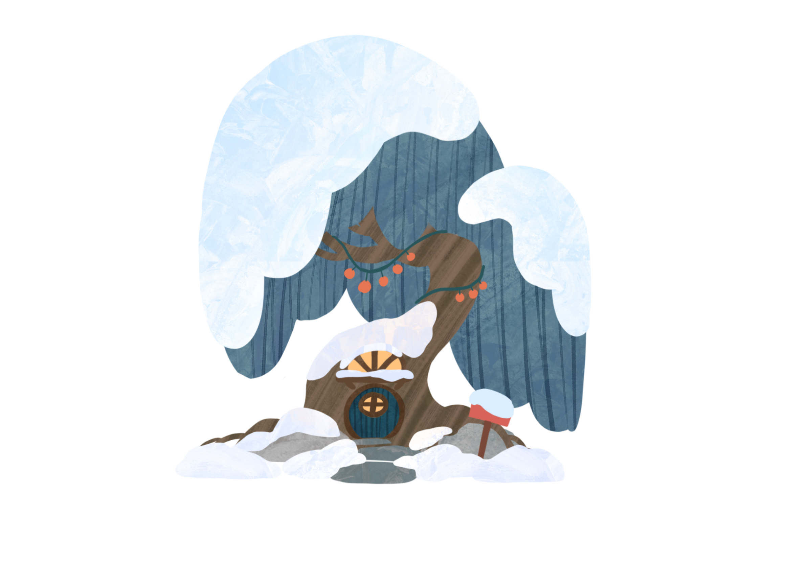
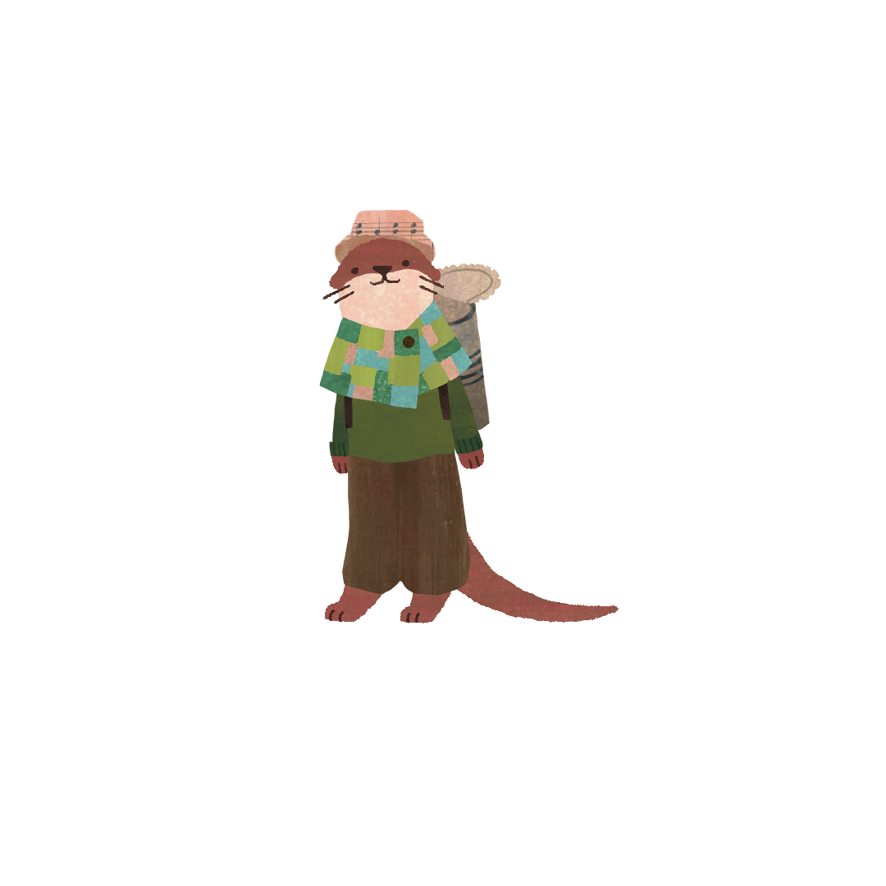
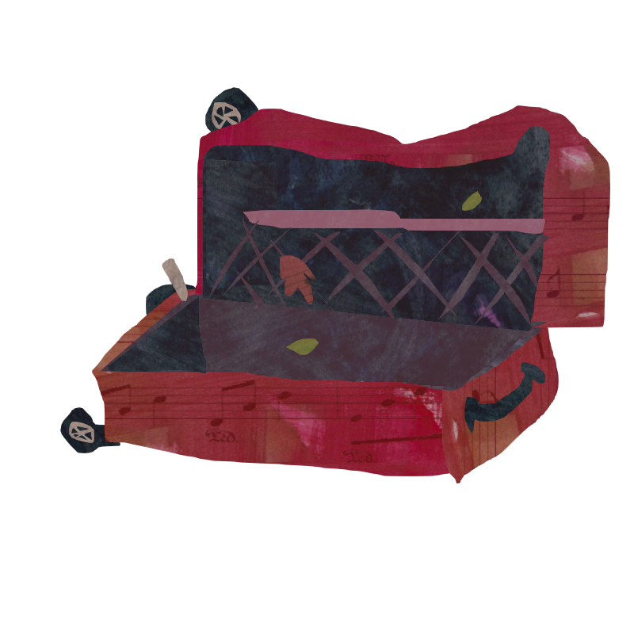
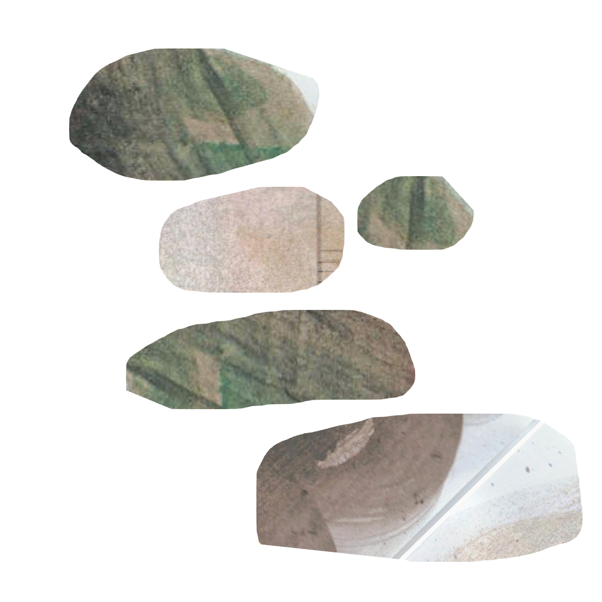

Project Positioning
家园装修 × 野外探索 × 小动物陪伴
一款把“紧张探索”与“温暖归家”做成完整心流的情感经营游戏
《虫虫装修》以瓢虫主角的微观视角切入废墟世界：玩家在野外承担搜集、负重、撤离与追逐的决策压力，回到家园后再把资源转化为装修、合成与关系推进。评委第一眼要看到的，不是概念堆砌，而是成熟、统一、已经被验证的玩法闭环。



《虫虫装修》以瓢虫主角的微观视角切入废墟世界：玩家在野外承担搜集、负重、撤离与追逐的决策压力，回到家园后再把资源转化为装修、合成与关系推进。评委第一眼要看到的，不是概念堆砌，而是成熟、统一、已经被验证的玩法闭环。



野外不是高门槛动作考验，而是逐步加压的决策场：平静探索、发现风险、短暂紧张、成功脱身后的放松。回到家园后，安全感、治愈感与成就感立刻接住玩家情绪，形成稳定而有记忆点的心流切换。
搜箱、负重、巡逻敌人与撤离判断共同制造压力，失败更多来自取舍而非纯操作。
家园不产生失败惩罚，是装修、互动、合成和情绪回收的主舞台。
家具摆放、房间扩建、剧情解锁与小动物回应，驱动玩家反复回家、反复投入。
门外是静止的废墟，门内是生长的羁绊。
用野外的惊险，换取满屋的欢笑。
装修不是打分，而是把冰冷废墟一点点填满温度。
演示版的目标是把“探索 → 回家 → 建造 → 被回应 → 再出发”讲清楚。这个循环同时承接系统成长、情绪回报与内容推进，因此既能支撑可玩性，也能支撑未来扩展。
在遗迹中搜索宝箱、材料与家具。
背包越满越危险，玩家判断何时继续、何时撤。
带着风险回家，把一次冒险完整结算。
资源进入工作台与家园空间，转成可见成长。
关系、情绪、日记与剧情对玩家行为作出回应。
房间扩建、任务解锁与装备成长推动下一轮探索。
野外材料进入工作台，产出家具与成长选择，再反向影响探索策略。
家园操作在单局中承担高权重，确保“回家”不是菜单切页，而是真正的主舞台。
前 10 分钟体验被明确设计为：接任务、采集、背包变满、回家制作、立刻收到反馈。

外向、话多、行动派，用乐观把家撑起来，是情绪外放的反馈代表。
外表可靠、内里柔软，偏好“旧物发挥价值”，天然适合承接工作台与升级目标。
通过对话、送礼、日记、旅行信件与家具互动，把陪伴做成持续变化的生活感。
第一次进入野外，救下第一只水獭，把“带回一个生命”立住。
做窝、补家具、开启第一次真正的采集循环。
探索压力上升，开始按照性格为角色定制房间。
逐步开放新区域、新动物、新情绪高潮与更复杂的互动。
主线、支线、信任任务、情绪任务并行提供短中长目标。
AI 不负责替代核心规则，而是把“家具摆放、送礼、靠近、抚摸、移走家具”这些玩家行为，转化成角色能记住、会解释、有阶段差异的情绪反馈。玩家感知到的不是聊天功能，而是“我刚刚做的事被这个角色看见了”。
玩家只需要专注于玩游戏，AI 在后台把行为转成情感反馈。
同一件家具，在不同关系阶段会拥有不同的回应与记忆。
目标不是“让 AI 多说话”，而是让陪伴真正变得动人。
探索、装修、成长、任务这些模块都足够熟悉，玩家能快速理解玩法目标。
每次探索都为下一次家园表达、关系推进与内容解锁打开选择空间。
沿着同一玩法逻辑继续增加章节、区域与角色，就能稳定放大体验而不失真。
建议导出 PDF 时保留分节分页：每个 section 都按 PPT 单页逻辑设计，可直接打印或另存为 PDF。